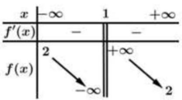
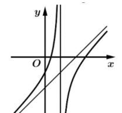
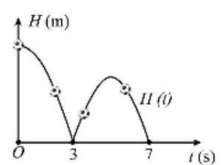
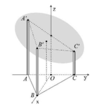
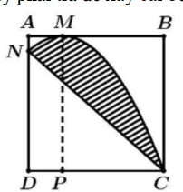
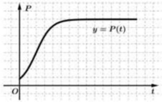

ĐỀ THI TOÁN - ĐỀ SỐ 46 HOT
Phần I: Trắc Nghiệm Nhiều Lựa Chọn
Tóm tắt kiến thức: Vector pháp tuyến của mặt phẳng
Mặt phẳng có phương trình \( ax + by + cz + d = 0 \) có vector pháp tuyến là \( \vec{n} = (a; b; c) \).
Câu 1:
Trong không gian \( Oxyz \), cho mặt phẳng \( (P): x - 4y + 3z - 2 = 0 \). Vector nào dưới đây là một vector pháp tuyến của \( (P) \)?
Chọn đáp án:
Lời giải:
Mặt phẳng \( (P): x - 4y + 3z - 2 = 0 \) có vector pháp tuyến là \( \vec{n} = (1; -4; 3) \). Kiểm tra các đáp án, ta thấy \( \vec{n} = (-1; 4; -3) \) cũng là vector pháp tuyến vì cùng hướng ngược với \( (1; -4; 3) \).
Đáp án: C.
Tóm tắt kiến thức: Tiệm cận đứng
Tiệm cận đứng của hàm số \( y = f(x) \) tại \( x = a \) nếu \( \lim_{x \to a^-} f(x) = \pm \infty \) hoặc \( \lim_{x \to a^+} f(x) = \pm \infty \). Bảng biến thiên giúp xác định tiệm cận đứng.
Câu 2:
Cho hàm số \( y = f(x) \) có bảng biến thiên như hình vẽ:

Tiệm cận đứng của đồ thị hàm số đã cho là đường thẳng có phương trình:
Chọn đáp án:
Lời giải:
Dựa vào bảng biến thiên, ta thấy hàm số có tiệm cận đứng tại \( x = 1 \) vì giá trị hàm tiến tới \( \pm \infty \) khi \( x \to 1 \).
Đáp án: C.
Tóm tắt kiến thức: Tính chất tích phân
- \( \int [f(x) + g(x)] \, dx = \int f(x) \, dx + \int g(x) \, dx \).
- \( \int k f(x) \, dx = k \int f(x) \, dx \) (với \( k \neq 0 \)).
- \( \int f'(x) \, dx = f(x) + C \).
- Tích phân của tích hai hàm không bằng tích các tích phân: \( \int f(x)g(x) \, dx \neq \int f(x) \, dx \cdot \int g(x) \, dx \).
Câu 3:
Cho các hàm số \( f(x) \) và \( g(x) \) liên tục trên tập xác định. Mệnh đề nào sau đây sai?
Chọn đáp án:
Lời giải:
- Mệnh đề A đúng: Tính chất cộng của tích phân.
- Mệnh đề B đúng: Tính chất nhân với hằng số.
- Mệnh đề C sai: Tích phân của tích hai hàm không bằng tích các tích phân riêng lẻ.
- Mệnh đề D đúng: Nguyên hàm của đạo hàm là hàm ban đầu cộng hằng số.
Đáp án: C.
Tóm tắt kiến thức: Logarit
- \( \log \frac{a}{b} = \log a - \log b \).
- \( \log (a^n) = n \log a \).
Câu 4:
Với \( a \) là số thực dương tùy ý, \( \log \frac{a^2}{100} \) bằng:
Chọn đáp án:
Lời giải:
Ta có: \( \log \frac{a^2}{100} = \log a^2 - \log 100 = 2 \log a - \log 10^2 = 2 \log a - 2 \).
Đáp án: C.
Tóm tắt kiến thức: Góc giữa đường thẳng và mặt phẳng
Góc giữa đường thẳng và mặt phẳng là góc giữa đường thẳng và hình chiếu của nó trên mặt phẳng. Trong hình chóp, nếu \( SA \perp (ABCD) \), góc giữa \( SB \) và \( (ABCD) \) được tính qua tam giác \( SAB \).
Câu 5:
Cho hình chóp \( S.ABCD \) có đáy là hình vuông cạnh \( a \), \( SA = a\sqrt{3} \), đường thẳng \( SA \) vuông góc với mặt phẳng \( (ABCD) \) (tham khảo hình vẽ). Góc giữa đường thẳng \( SB \) và mặt phẳng \( (ABCD) \) là:
Chọn đáp án:
Lời giải:
Góc giữa \( SB \) và mặt phẳng \( (ABCD) \) là góc \( \angle SBA \).
Trong tam giác vuông \( SAB \), \( SA = a\sqrt{3} \), \( AB = a \).
Ta có: \( \tan \angle SBA = \frac{SA}{AB} = \frac{a\sqrt{3}}{a} = \sqrt{3} \Rightarrow \angle SBA = 60^\circ \).
Vậy góc giữa \( SB \) và \( (ABCD) \) là \( 60^\circ \).
Đáp án: D.
Tóm tắt kiến thức: Vector trong hình học không gian
Trong hình chóp, tổng các vector cạnh có thể được biểu diễn thông qua các vector khác bằng cách sử dụng quy tắc tổng vector.
Câu 6:
Cho hình chóp \( S.ABCD \) có đáy là hình vuông cạnh \( a \), \( SA = a\sqrt{3} \), đường thẳng \( SA \) vuông góc với mặt phẳng \( (ABCD) \) (tham khảo hình vẽ). Tổng \( \vec{AB} + \vec{AD} + \vec{SA} \) bằng:
Chọn đáp án:
Lời giải:
Ta có: \( \vec{AB} + \vec{AD} + \vec{SA} = \vec{AB} + \vec{AD} = \vec{AC} \).
Vì \( \vec{SA} + \vec{AC} = \vec{SC} \), nên \( \vec{AB} + \vec{AD} + \vec{SA} = \vec{SC} \).
Đáp án: A.
Tóm tắt kiến thức: Diện tích hình phẳng
Diện tích hình phẳng giới hạn bởi các đường \( y = f(x) \), \( y = g(x) \), \( x = a \), \( x = b \) được tính bằng: \( S = \int_a^b |f(x) - g(x)| \, dx \). Nếu \( f(x) \geq g(x) \), thì \( S = \int_a^b [f(x) - g(x)] \, dx \).
Câu 7:
Gọi \( S \) là diện tích của hình phẳng giới hạn bởi các đường \( y = 2^x \), \( y = 0 \), \( x = 0 \), \( x = 2 \). Mệnh đề nào dưới đây đúng?
Chọn đáp án:
Lời giải:
Diện tích hình phẳng giới hạn bởi \( y = 2^x \), \( y = 0 \), \( x = 0 \), \( x = 2 \) là: \( S = \int_0^2 2^x \, dx \).
Đáp án: A.
Tóm tắt kiến thức: Cấp số nhân
Trong cấp số nhân \( (u_n) \), số hạng thứ \( n \) được tính bằng: \( u_n = u_1 \cdot q^{n-1} \), với \( u_1 \) là số hạng đầu, \( q \) là công bội.
Câu 8:
Cho cấp số nhân \( (u_n) \) với \( u_1 = 3 \), \( q = \frac{1}{2} \). Số \( \frac{3}{512} \) là số hạng thứ mấy?
Chọn đáp án:
Lời giải:
Ta có: \( u_n = u_1 \cdot q^{n-1} \Rightarrow \frac{3}{512} = 3 \cdot \left(\frac{1}{2}\right)^{n-1} \).
Suy ra: \( \left(\frac{1}{2}\right)^{n-1} = \frac{1}{512} \Rightarrow 2^{n-1} = 512 = 2^9 \Rightarrow n - 1 = 9 \Rightarrow n = 10 \).
Đáp án: C.
Tóm tắt kiến thức: Phương sai
Phương sai của mẫu số liệu ghép nhóm:
- Trung bình: \( \bar{x} = \frac{\sum x_i n_i}{\sum n_i} \).
- Phương sai: \( S^2 = \frac{1}{n} \sum n_i x_i^2 - \bar{x}^2 \).
Câu 9:
Nhiệt độ trong 55 ngày của một địa phương được cho trong bảng ghép lớp sau:
| Nhiệt độ (°C) | \([19; 22)\) | \([22; 25)\) | \([25; 28)\) | \([28; 31)\) | \([31; 34)\) | \([34; 37)\) |
|---|---|---|---|---|---|---|
| Số ngày | 5 | 7 | 8 | 16 | 12 | 7 |
Chọn đáp án:
Lời giải:
Giá trị đại diện: \( 20,5; 23,5; 26,5; 29,5; 32,5; 35,5 \).
Trung bình: \( \bar{x} = \frac{20,5 \cdot 5 + 23,5 \cdot 7 + 26,5 \cdot 8 + 29,5 \cdot 16 + 32,5 \cdot 12 + 35,5 \cdot 7}{55} = 28,9 \).
Phương sai: \( S^2 = \frac{20,5^2 \cdot 5 + 23,5^2 \cdot 7 + 26,5^2 \cdot 8 + 29,5^2 \cdot 16 + 32,5^2 \cdot 12 + 35,5^2 \cdot 7}{55} - 28,9^2 \approx 19,44 \).
Làm tròn đến chữ số thập phân thứ nhất: \( S^2 \approx 19,4 \), thuộc khoảng \( (19; 20) \).
Đáp án: C.
Tóm tắt kiến thức: Bất phương trình lũy thừa
Cho \( a > 1 \), bất phương trình \( a^{f(x)} \leq a^{g(x)} \Rightarrow f(x) \leq g(x) \). Nếu \( 0 < a < 1 \), thì \( a^{f(x)} \leq a^{g(x)} \Rightarrow f(x) \geq g(x) \).
Câu 10:
Tìm tập nghiệm của bất phương trình \( \left(\frac{1}{3}\right)^x \leq \left(\frac{1}{3}\right)^{-x+2} \).
Chọn đáp án:
Lời giải:
Vì \( \frac{1}{3} < 1 \), ta có: \( \left(\frac{1}{3}\right)^x \leq \left(\frac{1}{3}\right)^{-x+2} \Leftrightarrow x \geq -x + 2 \).
Giải: \( 2x \geq 2 \Rightarrow x \geq 1 \).
Vậy tập nghiệm là \( [1; +\infty) \).
Đáp án: B.
Tóm tắt kiến thức: Nhận dạng hàm số qua đồ thị
Đồ thị hàm số bậc hai trên bậc nhất có dạng \( y = \frac{ax^2 + bx + c}{x - d} \). Phân tích hình dạng đồ thị (tiệm cận, cực trị) để chọn hàm đúng.
Câu 11:
Đồ thị trong hình vẽ là đồ thị của hàm số nào trong các hàm số dưới đây?

Chọn đáp án:
Lời giải:
Từ hình dạng đồ thị, hàm số là dạng bậc hai trên bậc nhất (không có cực trị và \( a, m > 0 \)). Loại A, B (hàm phân thức bậc nhất). Hàm C có \( a < 0 \), không phù hợp. Hàm D: \( y = \frac{x^2 - 3x + 1}{x - 1} \) phù hợp với đồ thị.
Đáp án: D.
Tóm tắt kiến thức: Phương trình mặt cầu
Mặt cầu có đường kính \( AB \) có tâm là trung điểm \( I \) của \( AB \), bán kính \( R = \frac{AB}{2} \). Phương trình: \( (x - x_I)^2 + (y - y_I)^2 + (z - z_I)^2 = R^2 \).
Câu 12:
Trong không gian, cho điểm \( A(2; 1; 1) \), \( B(0; 3; -1) \). Mặt cầu đường kính \( AB \) có phương trình là:
Chọn đáp án:
Lời giải:
Trung điểm \( I \) của \( AB \): \( I(1; 2; 0) \).
Khoảng cách \( AB = \sqrt{(2-0)^2 + (1-3)^2 + (1-(-1))^2} = 2\sqrt{3} \).
Bán kính \( R = \frac{AB}{2} = \sqrt{3} \), nên \( R^2 = 3 \).
Phương trình mặt cầu: \( (x - 1)^2 + (y - 2)^2 + z^2 = 3 \).
Đáp án: B.
Phần II: Trắc Nghiệm Đúng/Sai
Tóm tắt kiến thức: Diện tích hình phẳng và nguyên hàm
- Diện tích hình phẳng giới hạn bởi \( y = f(x) \), \( y = g(x) \), \( x = a \), \( x = b \): \( S = \int_a^b |f(x) - g(x)| \, dx \).
- Nếu \( Q(x) \) là nguyên hàm của \( f(x) - g(x) \), thì \( \int_a^b [f(x) - g(x)] \, dx = Q(b) - Q(a) \).
Câu 13:
Cho hình phẳng \( (H) \) giới hạn bởi các đồ thị hàm số \( f(x) = x^2 - 2x - 1 \) và \( g(x) = 2x - 4 \). Xét hàm số \( Q(x) = \frac{x^3}{3} - 2x^2 + 3x \). Xét các phát biểu sau:
Chọn đáp án cho từng phát biểu:
a)
b)
c)
d)
Lời giải:
a) Đúng. \( f(x) - g(x) = x^2 - 2x - 1 - (2x - 4) = x^2 - 4x + 3 = 0 \Rightarrow x = 1, x = 3 \). Có hai nghiệm phân biệt.
b) Sai. Xét \( f(x) - g(x) = x^2 - 4x + 3 \). Tại \( x = 2 \), \( f(2) - g(2) = 4 - 8 + 3 = -1 < 0 \). Vậy \( f(x) - g(x) < 0 \) trên \( (1; 3) \).
c) Đúng. \( Q'(x) = x^2 - 4x + 3 = f(x) - g(x) \). Vậy \( Q(x) \) là nguyên hàm của \( f(x) - g(x) \).
d) Đúng. Diện tích: \( S = \int_1^3 |f(x) - g(x)| \, dx = -\int_1^3 (f(x) - g(x)) \, dx = -[Q(3) - Q(1)] = Q(1) - Q(3) \).
Đáp án: a) Đúng, b) Sai, c) Đúng, d) Đúng.
Tóm tắt kiến thức: Hàm số liên tục và tối ưu hóa
- Hàm số liên tục tại \( x = a \) nếu \( \lim_{x \to a} f(x) = f(a) \).
- Cực trị của hàm \( f(x) \): Lấy \( f'(x) = 0 \), kiểm tra dấu \( f'(x) \) hoặc \( f''(x) \).
Câu 14:
Khi thả một quả bóng từ đỉnh một tòa tháp xuống, nó chạm đất sau 3 giây. Sau đó, quả bóng nảy lên trước khi chạm đất lần nữa 4 giây sau đó. Chiều cao tính bằng mét của quả bóng so với mặt đất sau \( t \) giây tuân theo một hàm số liên tục trên \([0; 7]\) như sau:

\[
H(t) = \begin{cases}
-5t^2 + c & \text{khi } 0 \leq t < 3 \\
-5t^2 + dt + e & \text{khi } 3 \leq t \leq 7
\end{cases} \quad (c, d, e \in \mathbb{R})
\]
Xét các phát biểu sau:
Chọn đáp án cho từng phát biểu:
a)
b)
c)
d)
Lời giải:
a) Đúng. Từ hình vẽ, \( H(3) = H(7) = 0 \).
b) Sai. Vì hàm liên tục tại \( t = 3 \), ta có: \( -5 \cdot 3^2 + c = 0 \Rightarrow c = 45 \). Vậy \( H(0) = 45 \), quả bóng được thả từ độ cao \( 45 \, \text{m} \).
c) Sai. Từ \( H(3) = 0 \), \( H(7) = 0 \), ta có: \( \begin{cases} -5 \cdot 3^2 + 3d + e = 0 \\ -5 \cdot 7^2 + 7d + e = 0 \end{cases} \Rightarrow d = 50, e = -105 \). Vậy \( d = 50 \).
d) Đúng. Xét \( H(t) = -5t^2 + 50t - 105 \) trên \([3; 7]\). Đạo hàm: \( H'(t) = -10t + 50 = 0 \Rightarrow t = 5 \). Tại \( t = 5 \), \( H(5) = 20 \). Vì \( H(3) = H(7) = 0 \), \( H(5) = 20 \) là cực đại.
Đáp án: a) Đúng, b) Sai, c) Sai, d) Đúng.
Tóm tắt kiến thức: Hình học không gian
- Phương trình mặt phẳng qua ba điểm: Dùng tích có hướng để tìm vector pháp tuyến.
- Góc giữa hai mặt phẳng: \( \cos \theta = \frac{|\vec{n_1} \cdot \vec{n_2}|}{|\vec{n_1}| |\vec{n_2}|} \).
Câu 15:
Một mái nhà hình tròn được đặt trên ba cây cột trụ. Các cây cột trụ vuông góc với mặt sàn nhà phẳng và có độ cao lần lượt là \( 8 \, \text{m} \), \( 9 \, \text{m} \), \( 10 \, \text{m} \). Ba chân cột là ba đỉnh của một tam giác đều trên mặt sàn nhà với cạnh dài \( 8 \, \text{m} \). Chọn hệ trục tọa độ như hình vẽ, với \( B \) thuộc tia \( Ox \), \( C \) thuộc tia \( Oy \), tia \( Oz \) cùng hướng với vector \( \vec{AA'} \), gốc tọa độ \( O \) trùng với trung điểm của \( AC \), và mỗi đơn vị trên trục có độ dài 1 mét.

Xét các phát biểu sau:
Chọn đáp án cho từng phát biểu:
a)
b)
c)
d)
Lời giải:
a) Đúng. Tọa độ: \( A(0; -4; 0) \), \( B(4\sqrt{3}; 0; 0) \), \( C(0; 4; 0) \), \( A'(0; -4; 10) \), \( B'(4\sqrt{3}; 0; 9) \), \( C'(0; 4; 8) \).
b) Đúng. Vector \( \vec{A'B'} = (4\sqrt{3}; 4; -1) \), \( \vec{A'C'} = (0; 8; -2) \). Vector pháp tuyến: \( \vec{n} = [ \vec{A'B'}, \vec{A'C'} ] = (0; 8\sqrt{3}; 32\sqrt{3}) = 8\sqrt{3}(0; 1; 4) \). Phương trình mặt phẳng qua \( A'(0; -4; 10) \): \( y + 4z - 36 = 0 \).
c) Sai. Vector pháp tuyến của \( (ABC) \): \( \vec{k} = (0; 0; 1) \). Góc giữa \( (ABC) \) và \( (A'B'C') \): \( \cos \theta = \frac{4}{\sqrt{17}} \Rightarrow \theta \approx 14^\circ \), không nằm trong khoảng \( 27^\circ \) đến \( 35^\circ \).
d) Đúng. Tâm \( I(a; b; c) \) thỏa: \( \begin{cases} b + 4c = 36 \\ a^2 + (b+4)^2 + (c-10)^2 = (a-4\sqrt{3})^2 + b^2 + (c-9)^2 \\ a^2 + (b+4)^2 + (c-10)^2 = a^2 + (b-4)^2 + (c-8)^2 \end{cases} \Rightarrow I(\sqrt{5}; 0; 9) \). Khoảng cách đến mặt sàn: \( z = 9 \, \text{m} \).
Đáp án: a) Đúng, b) Đúng, c) Sai, d) Đúng.
Tóm tắt kiến thức: Xác suất và công thức Bayes
- Xác suất có điều kiện: \( P(A|B) = \frac{P(A \cap B)}{P(B)} \).
- Công thức Bayes: \( P(A|B) = \frac{P(B|A)P(A)}{P(B)} \).
Câu 16:
Nobita và Shizuka chuẩn bị đi tham quan hòn đảo Honshu trong hai ngày thứ Bảy và Chủ nhật tuần này. Ở hòn đảo Honshu này, mỗi ngày chỉ có nắng hoặc mưa. Nếu một ngày là nắng, thì khả năng xảy ra mưa ở ngày tiếp theo là \( 20\% \); còn nếu một ngày là mưa, thì khả năng ngày hôm sau vẫn mưa là \( 30\% \).

Xét các phát biểu sau:
Chọn đáp án cho từng phát biểu:
a)
b)
c)
d)
Lời giải:
Gọi \( A \): "Thứ Bảy trời nắng", \( B \): "Chủ nhật trời mưa".
Theo đề: \( P(A) = 0,7 \), \( P(B|A) = 0,2 \), \( P(B|\bar{A}) = 0,3 \).
a) Đúng. \( P(A) = 0,7 \).
b) Sai. \( P(\bar{B}|A) = 1 - P(B|A) = 1 - 0,2 = 0,8 \neq 0,77 \).
c) Sai. Xác suất Chủ nhật nắng: \( P(\bar{B}) = P(\bar{B}|A)P(A) + P(\bar{B}|\bar{A})P(\bar{A}) = 0,8 \cdot 0,7 + 0,7 \cdot 0,3 = 0,77 = 77\% \).
d) Sai. Xác suất Chủ nhật mưa: \( P(B) = P(B|A)P(A) + P(B|\bar{A})P(\bar{A}) = 0,2 \cdot 0,7 + 0,3 \cdot 0,3 = 0,23 \).
Xác suất thứ Bảy nắng khi Chủ nhật mưa: \( P(A|B) = \frac{P(A \cap B)}{P(B)} = \frac{P(B|A)P(A)}{P(B)} = \frac{0,14}{0,23} \approx 0,6086 \approx 61\% \).
Đáp án: a) Đúng, b) Sai, c) Sai, d) Sai.
Phần III: Trắc Nghiệm Trả Lời Ngắn
Tóm tắt kiến thức: Khoảng cách giữa hai đường thẳng chéo nhau
Khoảng cách giữa hai đường thẳng chéo nhau được tính bằng khoảng cách từ một điểm trên đường này đến mặt phẳng chứa đường kia và song song với đường này.
Câu 17:
Cho hình lăng trụ đứng \( ABC.A'B'C' \) có đáy \( ABC \) là tam giác đều cạnh \( \sqrt{2} \), \( BA' = \sqrt{6} \). Khoảng cách giữa hai đường thẳng \( A'B \) và \( B'C \) là bao nhiêu? (làm tròn đến hàng phần trăm)
Nhập đáp án:
Lời giải:
Kéo \( B'K \parallel A'B \), \( K \in AB \). Khi đó \( d(A'B, B'C) = d(B, (B'CK)) \).
Trong tam giác vuông \( A'B'B \), \( B'B = \sqrt{A'B^2 - A'B^2} = \sqrt{6 - 2} = 2 \).
Góc \( \angle CBK = 120^\circ \), tam giác \( BCK \) cân tại \( B \), nên \( \angle KBE = 60^\circ \).
Trong tam giác vuông \( BEK \), \( BE = BK \cdot \cos 60^\circ = \sqrt{2} \cdot \frac{1}{2} = \frac{\sqrt{2}}{2} \).
Trong tam giác vuông \( BB'E \), \( \frac{1}{BF^2} = \frac{1}{B'B^2} + \frac{1}{BE^2} = \frac{1}{4} + \frac{2}{2} = \frac{9}{4} \Rightarrow BF = \frac{2}{3} \approx 0,67 \).
Đáp án: 0,67.
Tóm tắt kiến thức: Xác suất và hệ phương trình
Sử dụng xác suất để lập hệ phương trình tìm số trận theo từng chiến thuật, sau đó tính tổng điểm dựa trên quy tắc cộng điểm.
Câu 18:
Trong một giải đấu bóng đá, đội bóng của Hưng thi đấu 30 trận với đúng hai chiến thuật tấn công hoặc phòng ngự, xuyên suốt cả trận đấu. Biết rằng, số trận thi đấu theo chiến thuật tấn công, họ thắng \( 30\% \) số trận và thua \( 20\% \) số trận. Khi họ chơi theo chiến thuật phòng ngự, họ thắng \( 20\% \) số trận và thua \( 40\% \) số trận. Mỗi trận thắng đội được cộng 3 điểm, mỗi trận hòa đội được cộng 1 điểm và không cộng điểm cho trận thua. Tổng số điểm đội bóng đạt được trong giải là bao nhiêu điểm?
Nhập đáp án:
Lời giải:
Gọi \( x \): số trận tấn công, \( y \): số trận phòng ngự.
Hệ phương trình: \( \begin{cases} x + y = 30 \\ 0,3x + 0,2y - (0,2x + 0,4y) = 0 \end{cases} \Rightarrow \begin{cases} x + y = 30 \\ x - 2y = 0 \end{cases} \Rightarrow x = 20, y = 10 \).
Điểm tấn công: \( 20 \cdot 0,3 \cdot 3 + 20 \cdot 0,5 \cdot 1 + 20 \cdot 0,2 \cdot 0 = 28 \).
Điểm phòng ngự: \( 10 \cdot 0,2 \cdot 3 + 10 \cdot 0,4 \cdot 1 + 10 \cdot 0,4 \cdot 0 = 10 \).
Tổng điểm: \( 28 + 10 = 38 \).
Đáp án: 38.
Tóm tắt kiến thức: Khoảng cách ngắn nhất
Khoảng cách ngắn nhất từ điểm \( T \) đến đường thẳng \( AB \) là khi \( TM \perp AB \), với \( M \in AB \). Sử dụng tích vô hướng để tìm \( M \).
Câu 19:
Trong một khu du lịch, người ta cho du khách trải nghiệm thiên nhiên bằng cách đu theo đường trượt zipline (là đường thẳng) từ vị trí \( A \) cao \( 15 \, \text{m} \) của tháp một sang vị trí \( B \) cao \( 10 \, \text{m} \) của tháp hai trong khung cảnh tuyệt đẹp xung quanh. Với hệ trục tọa độ \( Oxyz \) cho trường (đơn vị: mét), tọa độ của \( A \) và \( B \) lần lượt là \( (3; 2,5; 15) \) và \( (21; 27,5; 10) \). Bạn Tuấn đang đứng ở mặt đất vị trí có tọa độ \( T(12; 21; 0) \), hỏi khi du khách ở độ cao bao nhiêu mét trên cáp treo sẽ cách bạn Tuấn một khoảng nhỏ nhất (làm tròn kết quả đến hàng phần mười).
Nhập đáp án:
Lời giải:
Phương trình đường zipline: \( \begin{cases} x = 3 + 18t \\ y = 2,5 + 25t \\ z = 15 - 5t \end{cases} \).
Điểm \( M(3 + 18t; 2,5 + 25t; 15 - 5t) \). Vector \( \vec{TM} = (18t - 9; 25t - 18,5; 15 - 5t) \), \( \vec{AB} = (18; 25; -5) \).
\( \vec{TM} \perp \vec{AB} \Rightarrow \vec{TM} \cdot \vec{AB} = 0 \Rightarrow (18t - 9) \cdot 18 + (25t - 18,5) \cdot 25 + (15 - 5t) \cdot (-5) = 0 \).
Giải: \( t = \frac{1399}{1948} \Rightarrow z_M = 15 - 5 \cdot \frac{1399}{1948} \approx 11,4 \, \text{m} \).
Đáp án: 11,4.
Tóm tắt kiến thức: Diện tích hình phẳng
Diện tích hình phẳng giới hạn bởi hai đường \( y = f(x) \), \( y = g(x) \) từ \( x = a \) đến \( x = b \): \( S = \int_a^b |f(x) - g(x)| \, dx \).
Câu 20:
Ông Duy có một mảnh vườn hình vuông cạnh bằng \( 8 \, \text{m} \). Ông dự định xây một cái bể bơi đặc biệt như hình vẽ.

Số tiền cần trả để xây bể bơi là bao nhiêu triệu đồng? (làm tròn đến hàng đơn vị)
Nhập đáp án:
Lời giải:
Parabol qua \( C(8; 0) \), \( M(2; 8) \), \( N \): \( y = ax^2 + bx + c \). Trục đối xứng: \( x = -\frac{b}{2a} = 2 \Rightarrow b = -4a \).
Hệ phương trình: \( \begin{cases} 4a + 2b + c = 8 \\ 64a + 8b + c = 0 \\ b = -4a \end{cases} \Rightarrow a = -\frac{2}{9}, b = \frac{8}{9}, c = \frac{64}{9} \).
Parabol: \( y = -\frac{2}{9}x^2 + \frac{8}{9}x + \frac{64}{9} \).
Đường thẳng \( NC \): \( y = \frac{64}{9} - \frac{8}{9}x \).
Diện tích: \( S = \int_0^8 \left[ \left(-\frac{2}{9}x^2 + \frac{8}{9}x + \frac{64}{9}\right) - \left(\frac{64}{9} - \frac{8}{9}x\right) \right] dx = \ Queer S = \int_0^8 \left( -\frac{2}{9}x^2 + \frac{16}{9}x \right) dx = \frac{512}{27} \).
Chi phí: \( 5 \cdot \frac{512}{27} \approx 94,81 \approx 95 \, \text{triệu đồng} \).
Đáp án: 95.
Tóm tắt kiến thức: Xác suất có điều kiện và công thức Bayes
- Xác suất có điều kiện: \( P(A|B) = \frac{P(B|A)P(A)}{P(B)} \).
- Tổ hợp: \( C_n^k = \frac{n!}{k!(n-k)!} \), dùng để tính xác suất chọn \( k \) phần tử từ \( n \) phần tử.
- Công thức Bayes: \( P(A_i|B) = \frac{P(B|A_i)P(A_i)}{\sum P(B|A_j)P(A_j)} \).
Câu 21:
Có một kho chứa bia kém chất lượng chứa các thùng giống nhau (24 lon/thùng) gồm 2 loại: loại I để lẫn mỗi thùng 5 lon quá hạn sử dụng, loại II để lẫn mỗi thùng 3 lon quá hạn. Biết số lượng thùng loại I gấp 2 lần số lượng thùng loại II. Chọn ngẫu nhiên 1 thùng từ trong kho, từ thùng đó chọn ngẫu nhiên 10 lon thì thấy trong 10 lon đó có hai lon quá hạn sử dụng. Tính xác suất 10 lon được lấy là bia loại I (làm tròn kết quả đến hàng phần trăm).

Nhập đáp án:
Lời giải:
Gọi \( A_1 \): chọn thùng loại I, \( A_2 \): chọn thùng loại II, \( B \): chọn 10 lon có 2 lon quá hạn.
- Xác suất chọn thùng: \( P(A_1) = \frac{2}{3} \), \( P(A_2) = \frac{1}{3} \).
- Xác suất có điều kiện:
+ Với thùng loại I (5 lon quá hạn, 19 lon không quá hạn): \( P(B|A_1) = \frac{C_5^2 \cdot C_{19}^8}{C_{24}^{10}} = \frac{10 \cdot 75582}{1961256} = \frac{195}{506} \).
+ Với thùng loại II (3 lon quá hạn, 21 lon không quá hạn): \( P(B|A_2) = \frac{C_3^2 \cdot C_{21}^8}{C_{24}^{10}} = \frac{3 \cdot 203490}{1961256} = \frac{315}{1012} \).
- Xác suất tổng: \( P(B) = P(B|A_1)P(A_1) + P(B|A_2)P(A_2) = \frac{195}{506} \cdot \frac{2}{3} + \frac{315}{1012} \cdot \frac{1}{3} = \frac{390}{1518} + \frac{105}{1012} = \frac{365}{1012} \).
- Xác suất cần tìm: \( P(A_1|B) = \frac{P(B|A_1)P(A_1)}{P(B)} = \frac{\frac{195}{506} \cdot \frac{2}{3}}{\frac{365}{1012}} = \frac{\frac{390}{1518}}{\frac{365}{1012}} = \frac{390}{1518} \cdot \frac{1012}{365} = \frac{390 \cdot 1012}{1518 \cdot 365} \approx 0,7117 \approx 0,71 \).
Đáp án: 0,71.
Tóm tắt kiến thức: Tốc độ tăng trưởng và tối ưu hóa hàm số
- Hàm số mô hình tăng trưởng: \( P(t) = \frac{c}{1 + a \cdot b^{-t}} \), với \( c \) là giới hạn trên, \( a, b \) là tham số.
- Tốc độ tăng trưởng: \( P'(t) \), giá trị tối đa đạt được khi \( P''(t) = 0 \).
- Đạo hàm: \( P'(t) = \frac{c a b^{-t} \ln b}{(1 + a b^{-t})^2} \).
Câu 22:
Suy ra điện tích bề bơi bằng Để đánh giá khả năng tăng trưởng, người ta mô phỏng số lượng cá trong hồ qua từng năm thông qua hàm số \( P(t) = \frac{c}{1 + a \cdot b^{-t}} \) (\( a, b, c \in \mathbb{R} \)) có đồ thị như hình vẽ. Biết rằng khi bắt đầu thả cá (\( t = 0 \)) thì \( P(0) = 800 \), sau 3 năm (\( t = 3 \)) thì \( P(3) = 6000 \), và sức chứa của hồ là 8000 con cá. Sử dụng mô hình trên, hãy tính tốc độ tăng trưởng tối đa (đơn vị con/năm) của đàn cá (kết quả làm tròn đến hàng đơn vị).

Nhập đáp án:
Lời giải:
Từ đề bài:
- \( P(0) = 800 \Rightarrow \frac{c}{1 + a} = 800 \).
- \( P(3) = 6000 \Rightarrow \frac{c}{1 + a \cdot b^{-3}} = 6000 \).
- Sức chứa: \( \lim_{t \to +\infty} P(t) = c = 8000 \).
Thay \( c = 8000 \) vào: \( \frac{8000}{1 + a} = 800 \Rightarrow 1 + a = 10 \Rightarrow a = 9 \).
Thay \( c = 8000 \), \( a = 9 \) vào: \( \frac{8000}{1 + 9 \cdot b^{-3}} = 6000 \Rightarrow 1 + 9b^{-3} = \frac{4}{3} \Rightarrow 9b^{-3} = \frac{1}{3} \Rightarrow b^{-3} = \frac{1}{27} \Rightarrow b = 3 \).
Vậy: \( P(t) = \frac{8000}{1 + 9 \cdot 3^{-t}} \).
Tốc độ tăng trưởng: \( P'(t) = \frac{8000 \cdot 9 \cdot 3^{-t} \cdot \ln 3}{(1 + 9 \cdot 3^{-t})^2} \).
Để tìm cực đại của \( P'(t) \), đặt \( u = 3^{-t} \), ta có: \( P'(t) = 8000 \cdot \ln 3 \cdot \frac{u}{(1 + 9u)^2} \).
Xét hàm \( g(u) = \frac{u}{(1 + 9u)^2} \). Đạo hàm: \( g'(u) = \frac{(1 + 9u)^2 \cdot 1 - u \cdot 2(1 + 9u) \cdot 9}{(1 + 9u)^4} = \frac{1 - 9u}{(1 + 9u)^3} \).
\( g'(u) = 0 \Rightarrow 1 - 9u = 0 \Rightarrow u = \frac{1}{9} \).
Tại \( u = \frac{1}{9} \): \( g\left(\frac{1}{9}\right) = \frac{\frac{1}{9}}{(1 + 9 \cdot \frac{1}{9})^2} = \frac{\frac{1}{9}}{4} = \frac{1}{36} \).
Vậy \( P'(t)_{\text{max}} = 8000 \cdot \ln 3 \cdot \frac{1}{36} \approx 8000 \cdot 1,0986 \cdot \frac{1}{36} \approx 2197 \).
Đáp án: 2197.